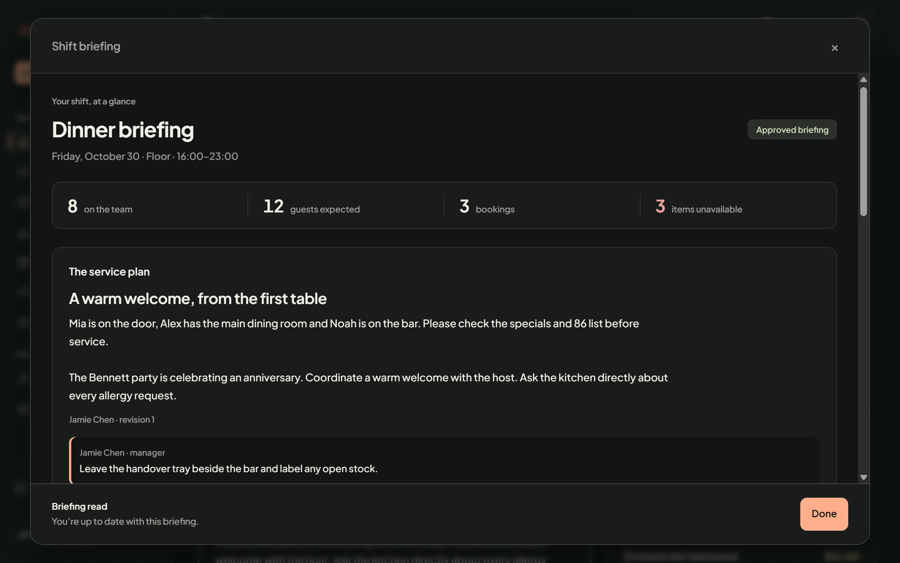

Shift onboarding
Nobody starts the shift cold.
The manager approves tonight’s plan once. Everyone on shift reads the briefing, the handover and the 86s, then confirms.
- Who is on tonight, station by station.
- Handover notes and 86s from the last shift.
- One tap to confirm, and the manager sees who did.
everyone briefed
